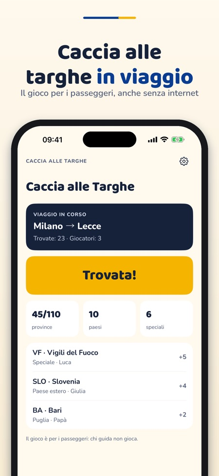
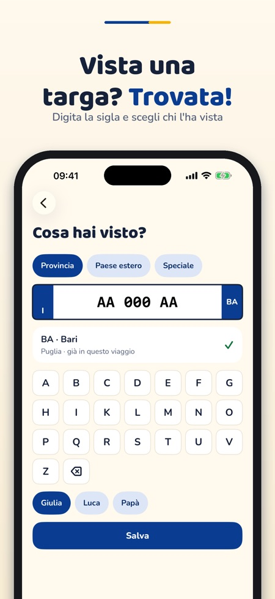
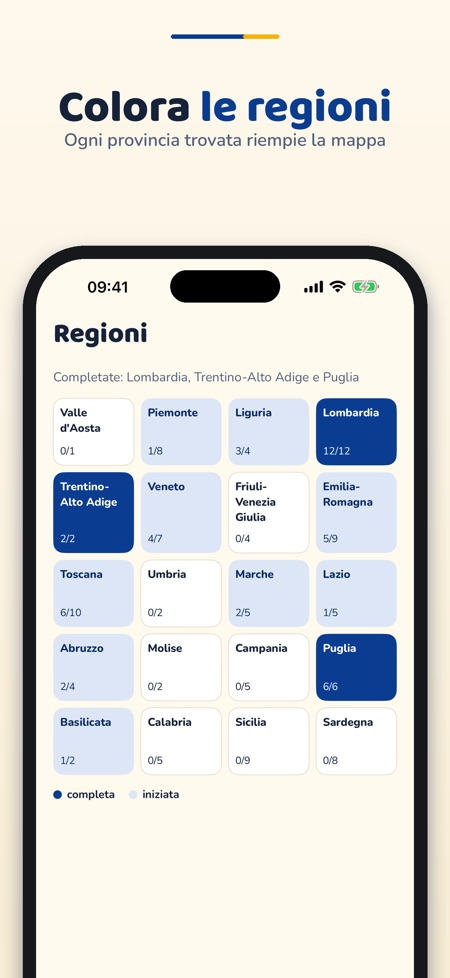

Caccia alle Targhe è il gioco per i passeggeri durante i viaggi in auto: raccogli le province italiane, le targhe speciali e i paesi stranieri.



Durante il viaggio digiti o scegli la sigla della targa che vedi e confermi con «Trovata!» in un tocco.
Le province italiane, le targhe speciali come CD, EE, VF, CRI, Polizia, Carabinieri ed Esercito e le sigle dei paesi esteri.
Sì, con punti e classifica. Senza acquisto si può giocare in due; con l'acquisto fino a sei giocatori.
Il gioco è per i passeggeri, non per chi guida.
No, si salvano solo sigle (provincia, paese, categoria), mai numeri di targa completi.
Sì, funziona offline, senza account e senza pubblicità.
Le province italiane, un viaggio e due giocatori.
No. Un acquisto unico sblocca targhe speciali, paesi esteri, viaggi illimitati, il quiz e i pacchetti con i cantoni svizzeri e i dipartimenti francesi. Nessun abbonamento.
Caccia alle Targhe è il gioco per i passeggeri durante i viaggi in auto: raccogli le province italiane, le targhe speciali e i paesi stranieri.
Le province italiane, un viaggio e due giocatori si possono usare senza acquisto. Un acquisto unico sblocca targhe speciali, paesi esteri, viaggi illimitati, fino a sei giocatori, il quiz e i pacchetti con i cantoni svizzeri e i dipartimenti francesi. Nessun abbonamento.
Il gioco è per i passeggeri, non per chi guida. Si salvano solo sigle (provincia, paese, categoria), mai numeri di targa completi.